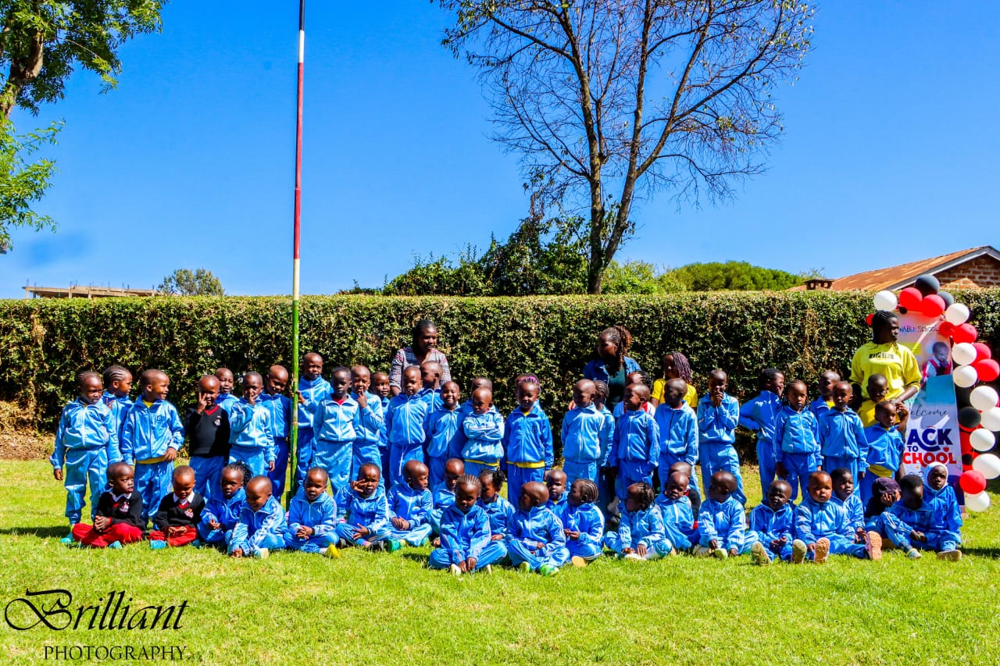
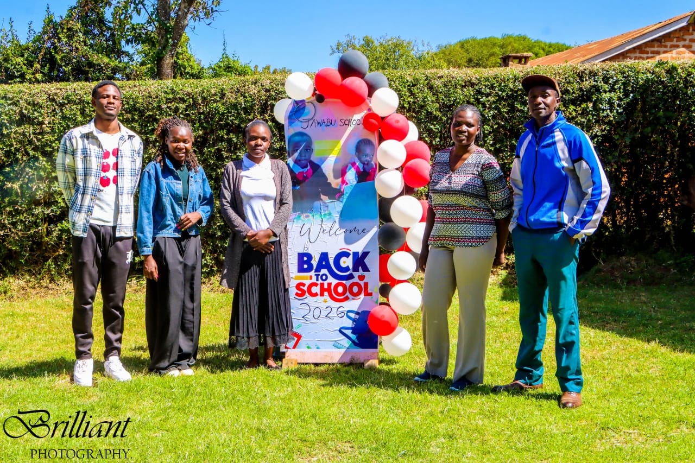
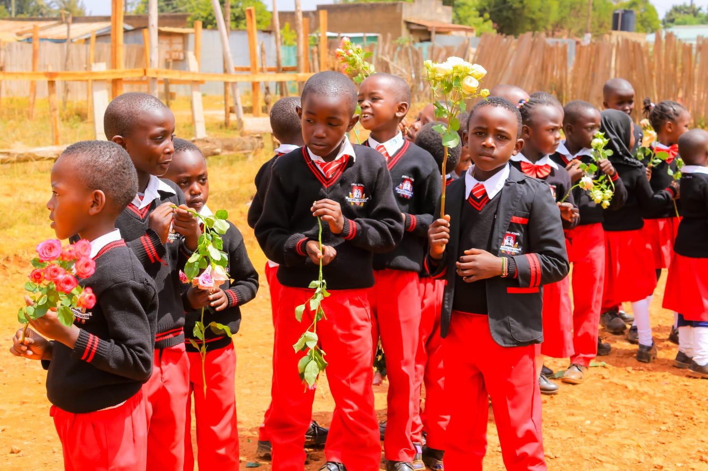

About us





At Jawabu School, our unwavering dedication is to advancing academic excellence and supporting the holistic well‑being of every learner, while maintaining affordability.

At Jawabu School, our core values guide everything we do. We uphold academic excellence with integrity and discipline, fostering respect and inclusivity in all aspects of learning. Rooted in faith, we nurture a supportive community where service and responsibility are embraced. These values shape our pupils into confident, principled individuals prepared to thrive both in school and beyond.
At Jawabu School, our educational philosophy is centered on nurturing the whole child — mind, character, and spirit. We are committed to cultivating confidence, creativity, and critical thinking while providing a serene and supportive environment for learning. Our approach prepares pupils to face real‑world challenges with strong moral grounding, equipping them not only for academic success but also for meaningful lives of leadership, service, and lifelong curiosity.
At Jawabu School, we believe education thrives through strong partnerships with parents, guardians, and the wider community. We actively engage families in the learning journey, fostering collaboration and trust to support every child’s growth. Our school also embraces its role in contributing to local development and culture, ensuring that education remains relevant, accessible, and impactful within our Kenyan context. Through these connections, we cultivate a supportive environment where learners are empowered to succeed both in school and in life.
Our classrooms are equiped with the latest technology
Highly Qualified and experienced staff
indoor and outdoor sports areas